Back Talk Reverse Delay Analysis
The Back Talk Reverse Delay pedal is included in the Miscellaneous Series Effects released in 2001 by Danelectro. Built in a sturdy die-cast enclosure and running on 9V, it is a cost-effective pure digital backward delay, suitable for creative possibilities, going from subtle delay to psychedelic oscillating noisy sounds.
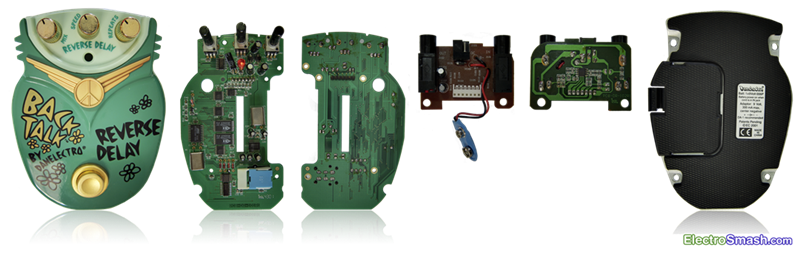
Table of Contents:
1. The Reverse Delay Effect.
1.1 Reverse Delay Back Talk Control Knobs.
2. Back Talk Reverse Delay Circuit.
2.1 The Analog PCB Circuit.
2.1.1 Voltage Bias Block.
2.1.2 Input Buffer Stage.
2.1.3 Output Buffer Stage.
2.2 The Digital PCB Circuit.
2.2.1 Power Supply Stage.
2.2.2 Power On Reset Circuit.
2.2.3 Potentiometers & Footswitch ADC Block.
2.2.4 Audio Codec.
2.2.5 Memory Management.
3. Back Talk Reverse Delay Clon.
4. Resources.
4.1 Back Talk Reverse Delay Datasheets.
1. The Reverse Delay Effect.
The concept behind reverse delay device is simple: The input signal is passed through a memory buffer, where it is delayed for a short time and then sent reversed to the output.
Mixing the reverse delayed sound with the original signal, the pedal produces a single repeat following the original sound, but feedbacking a percentage of the delayed signal back to the input produces a repeating echo effect, where each subsequent echo is a little quieter than the previous one.
If the feedback gain is more than unity, the echoes will build up in level rather than decaying, resulting in an uncontrollable psychedelic howl.
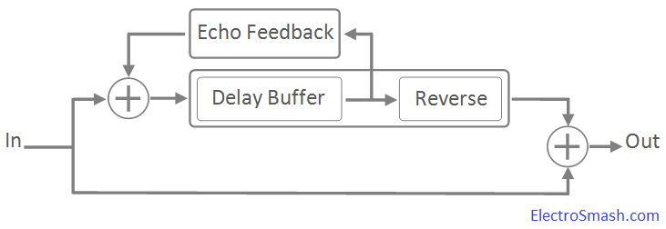
To illustrate the operation, a sawtooth signal is used as a guitar input signal.- Original sawtooth input wave.
- In the beginning of the process, the wave is chopped according to the pedal knobs.
- Each of these pieces are reversed and delayed.
- At last, the original blue wave (2) and the reverse delayed green one (3) are blended creating the sound effect.
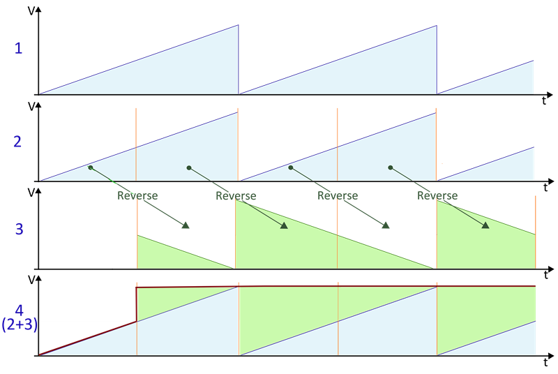
1.1 Reverse Delay Back Talk Control Knobs.
The pedal is commanded by 3 knobs: Mix, Speed, and Repetitions which will adjust the effect sound features:
- Mix: Controls the blend between the original dry signal and the wet processed signal, giving more presence to the genuine input wave or to the effected sound.
- Repetitions: Sets the number of times that the sampled delayed signal will be repeated over the original signal, creating an echo effect and controlling its depth.
- Speed: Adjusts the sample delay window, in other words, the amount of time that the signal is delayed and the duration of the delay. To illustrate this factor, in the below figure the reverse delay effect is applied over two sawtooth signals with a different speed/delay window:
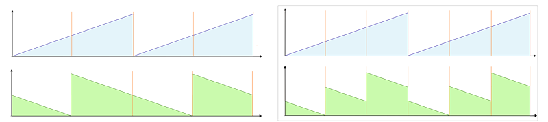
2. Back Talk Reverse Delay Circuit.
The circuit is implemented in two PCBs: the Analog PCB and the Digital PCB, linked by a 7-pin connector.
The input signal enters into the pedal through the Analog PCB, being buffered and prepared to the digital signal processing in the Digital PCB. After the digital effect is added by the Digital PCB, the signal is sent back to the Analog PCB to be buffered again and be prepared to the output.
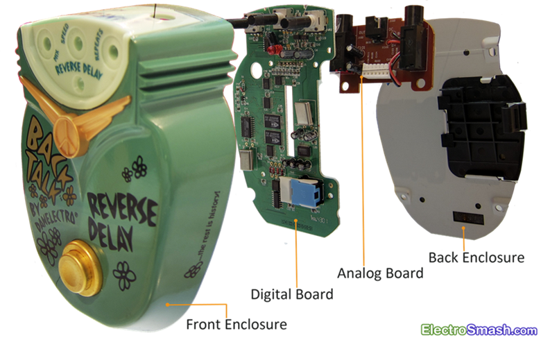
2.1 The Analog PCB Circuit.
The small input/output buffer board is a single layer PCB which contains 3 stages: the Voltage Bias, the Input Buffer, and the Output Buffer.
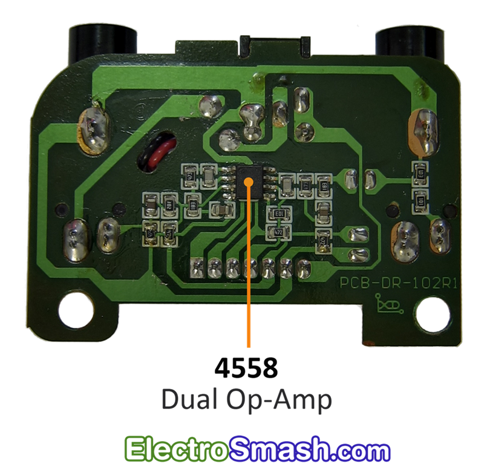
The circuit is based on the famous 4558 dual op-amp IC, one half of it will be used as Input Buffer and the other half as an Output Buffer. The 7-pin connector will send and receive signals between this PCB and the Digital Board.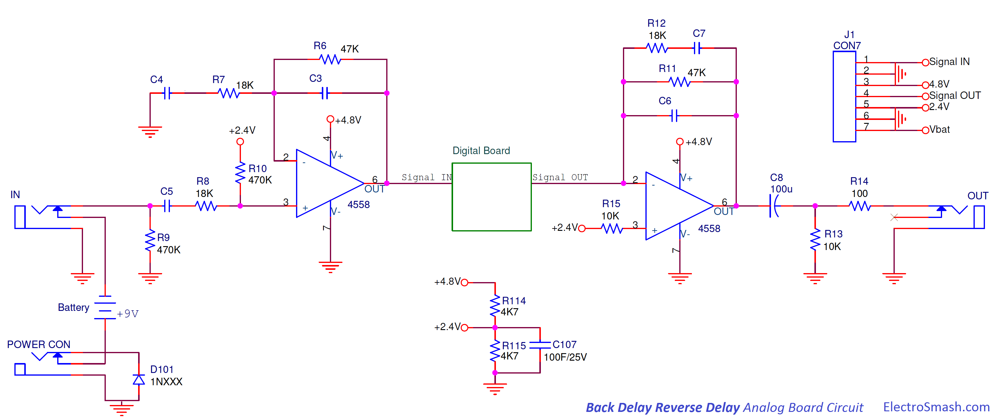
2.1.1 Voltage Bias Block.
The Voltage Bias Block provides the voltage levels to the 4558 dual op-amp and electrical protection against reverse polarity supply.
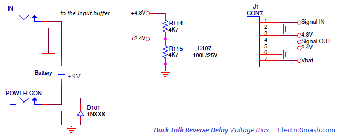
- The resistor divider (R114, R115) generates +2.4 volts from +4.8V. The +2.4V resistors junction is decoupled to ground with a large value electrolytic capacitor C907 (100uF) to remove all ripple from the supply voltage.
- The diode D101 protects the pedal against reverse polarity connections.
- The stereo in jack is used as an on-off switch, switching the battery (-) terminal to ground when the guitar jack is connected.
2.1.2 Input Buffer Stage.
The Input Buffer grants high input impedance, frequency filtering and voltage gain, keeping signal integrity and preparing it to be digitalized.
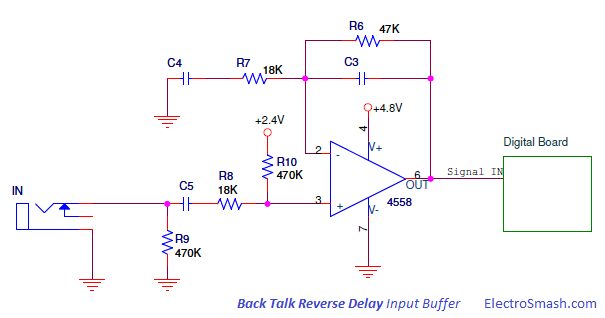
Not considering for the moment the caps C3 and C4, the non-inverting amplifier gain can be calculated as:
\[G_{v}=\frac{1+R_{6}}{R_{7}}=\frac{1+47K}{18K}=2.6\tag*{{}^{1}}\]
The capacitors C3 and C4 create a pass-band filter (low pass + high pass) where:
- Low pass = R6C3 network with fc=1/(2πR6C3)
- High pass = R7C4 network with fc=1/(2πR7C4)
This pass-band filter is similar to the non-inverting amp in the Tube Screamer. It will add a subte honky tone but besides this small tone modification, it is important for digital effects to eliminate the excess of bass and treble due to the bandwidth limitation in the analog to digital conversion stage.
- The network C5 R8 R10 and the input impedance of the 4558 (Zin=50MΩ) also creates a high pass filter to remove the DC component from the input line.
- The resistor R9 next to the input jack to ground is a pull-down resistor which avoids popping sounds when the pedal is switched on. The input pull-down resistor becomes the maximum input impedance of the pedal.
2.1.3 Output Buffer Stage.
The Output Buffer procures low output impedance, filtering and some voltage Gain, keeping signal integrity and preparing it to the output.
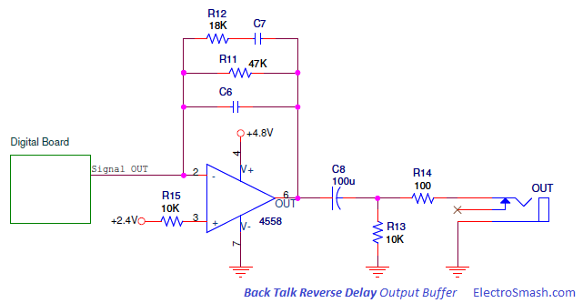
The op amp is in inverting configuration, C6 will smooth high harsh harmonics and C8 is a bass cut filter, muting the excess of bass to be delivered to the next stage.
The 2-layers PCB can be broken down into simpler blocks: Power Supply stage, Potentiometers & Footswitch ADC block, Audio Codec and Memory Management.
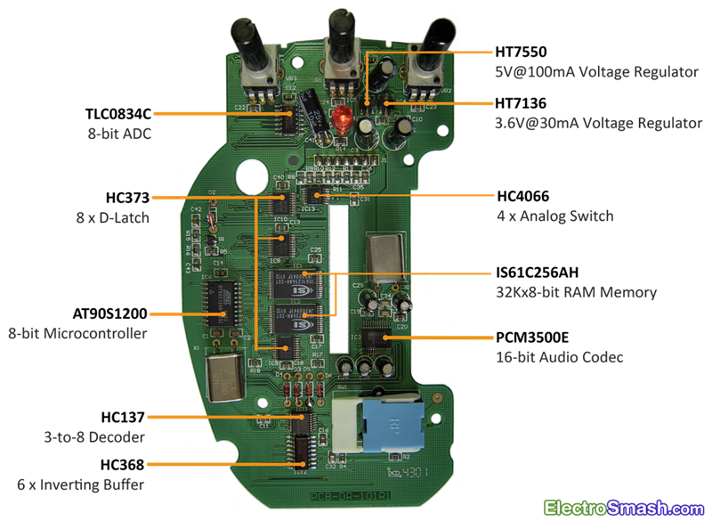
The circuit is based in the 8-bit Atmel microcontroller AT1200S which manages few peripherals. The input signal coming from the Analog Board is primarily digitalized by the PCM3500E Audio Codec and the resulting data is processed by the Micro using the RAM memory to generate the reverse delay effect. Finally, the digital signal is translated back to analog levels using again the PCM3500E Codec. Two linear voltage regulators will grant 5.0 and 3.6 of voltage supply for the parts.
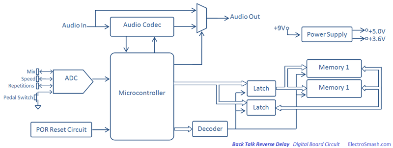
2.2.1 Power Supply Stage.
The Power Supply Stage is made up of two Holtek voltage regulators, they will provide voltage supply to all stages in the pedal.
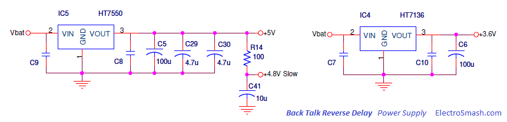
- The IC5 HT7550 is a three-terminal 5V@100mA low dropout CMOS linear voltage regulator, supplying 5.0 volts.
- The 9V battery primary voltage source and the 5.0V output are decoupled to ground with several capacitors C9, C8, C29 (4.7uF elec.)C30 (4.7uF elec.) and C5 (100uF elec) to remove all ripple from supply voltage.
- The R14C41 network generates +4.8V Slow supply, which is used only by the 4558 Dual Op-Amp and the HC4066 Analog Switch, grants a smooth supply ramp due capacitor C41 charge/discharge time:
Time Charge/Discharge = 5*R14*C41 = 5*100Ω*10uF = 5ms
- The IC4 HT7136 is a three-terminal 3.6V@30mA low dropout CMOS linear voltage regulator, supplying 3.6 volts only to the Audio Codec.
- The 9V battery primary voltage source and the 3.6V output are decoupled to ground with several capacitors C7, C10, and C6 (100uF elec.) to remove all ripple from supply voltage.
2.2.2 Power On Reset Circuit.
It is important to keep under control the system at start-up estate. Otherwise, the microcontroller may initially operate in an unpredictable fashion.
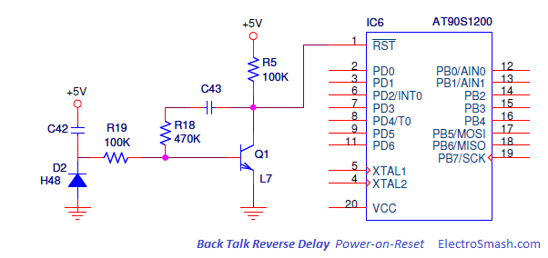
The Power-On-Reset circuit asserts a reset signal whenever Vcc supply falls below a reset threshold. The reset time-out period can be adjusted using C42. Reset remains asserted for an interval programmed by C42, after Vcc has risen obove the threshold voltage.
2.2.3 Potentiometers & Footswitch ADC Block.
The VR3 Mix, VR1 Speed, VR2 Repetitions 3K3 potentiometers and the pedal footswitch SW1 are read by the microcontroler through an Analog to Digital Converter IC7 TLC0834C.
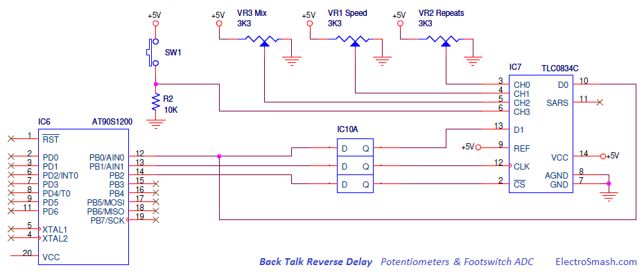
The microcontroler does not have enough embedded ADCs to read all the analog levels from the potentiometers and the footswitch, so as to do it and save the maximum resources, the Texas Instruments TLC0834C ADC is used. The result of these measures are sent in a single serial line to the microcontroller to be processed.
- D-Latches from IC10 HC373 multiplex the port B of the micro, keeping these lines accessible for other purposes at the same time.
2.2.4 Audio Codec.
The Audio Codec is a single chip that encodes the guitar analog input as a digital serial signal to be taken by the microcontroller. It also decodes the processed digital signals from the microcontroller back into analog. So, the Codec contains both an Analog-to-digital converter (ADC) and Digital-to-analog converter (DAC) running off the same clock at 11.286 MHz.
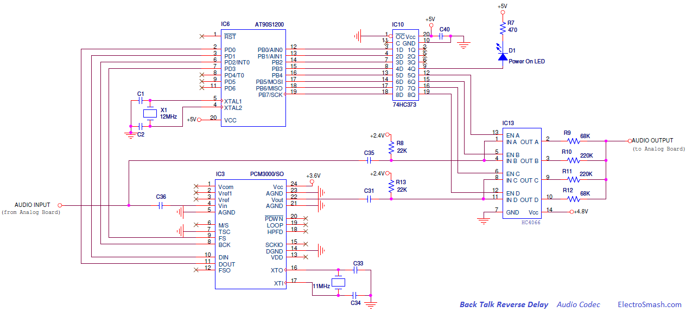
The PCM3500E by Burr-Brown contains 16-bit Delta Sigma ADC and DAC, with a sampling frequency of 22.05KHz (11.286/512). The chip also includes anti-aliasing filter, digital high-pass filter for DC blocking, and output low-pass filter to enhance performance.
The dry input signal is encoded or digitalized by the ADC block of the PCM3500 and sent in serial mode to the micro. The microcontroller manage and modify the digitalized signal adding the back delay effect and finally the wet signal is translated back to analog using the DAC block of the PCM3500.
- Using the Analog Switch HC4066 commanded by the microcontroller, the input signal can skip all the digital signal processing and go straight to the output when the pedal is in off/bypass mode.
- The Power on diode D1 is turned on when the push footswitch is pressed, showing whether the effect is active or not.
2.3 Memory Management.
All delay based pedals need some mechanism to store the audio in order to play it later as a delayed version. This method can be magnetic tape in old pure analog effects, capacitors in bucket brigade delay devices or just RAM memory in pure digital pedals.
The two ISS ram chips supply 8-bits of 32K memory each one, these parts can be associated as 32K of 16-bits memory. The Audio Codec works at 16-bits with a sampling period of 22.05KHz, with this speed, the memory system is able to store 32K/22.05KHz = 1.45 seconds of delay.
In the Back Talk pedal, the main bottleneck in the hardware design is the way to manage two 28 pined memory chips with a limited free lines. To do so, 16 d-type latches are needed to extend the number of available lines multiplexing the port B of the micro.
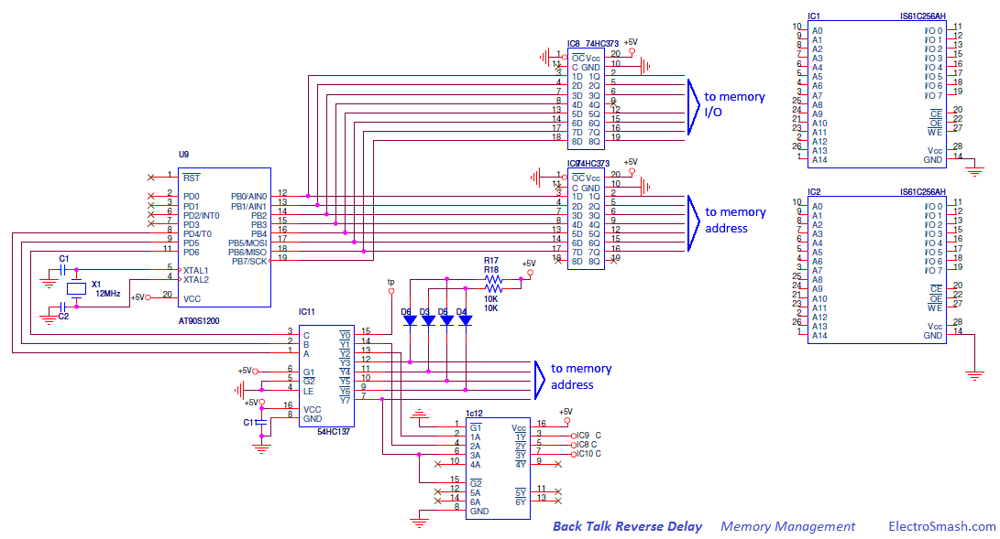
The Microcontroler receives the digitalized guitar signal from the PCM3500 Audio Codec in serial mode. Then, the data serial string is processed and sent in parallel to the RAM memory through the HC373 D-latches; the IC9 D-Latch is used to drive the address lines and the IC8 manage the memory I/O lines.
Depending on the user potentiometers (mix, speed, repetitions) the micro will apply different adjustments in the feedback, deep of memory buffer and mixing algorithm.
- The HC137 3-to-8 Line Decoder is in charge of enable the latches and also address the memory extending the number of available lines. The diodes D3, D4, D5 and D6 are used to adjust levels between parts.
- The IC12 HC368 Hex inverting buffers adapt the levels to negative logic to engage ICs.
3. Back Talk Reverse Delay Clon.
After understanding the circuit and Danelectro approach for this pedal, it can be concluded that the reverse engineering clone is pretty discouraging. Despite the relatively complex PCB layout and all surface montage devices, some of then obsoletes, the git of the pedal remains in the source code of the microcontroller which is not available.
The hardware design indicates that the program code must be complex as well; the serial data encryption and decryption for the Audio Codec and the ADC, the 24 latches, 2 memories and decoder management for real time signal processing is not trivial.
Anyway, is a good learning exercise to see how the big ones design DSP pedals, so you can for sure gain some ideas for you own designs, good luck!
4. Resources.
Danelectro pedals in Wikipedia.
Pulldown Resistors by AMZFX.
Pulldown Resistors vs Input Impedance by AMZFX.
Sequencer Delay Masterclass in Sound on Sound.
Practical Modeling of Bucket-Brigade-Device CircitsCircits by C. Raffel & J. Smith.
4.1 Back Talk Reverse Delay Datasheets.
IC1, IC2, IS61C256AH 32Kx8 CMOS High Speed Static RAM Memory.
IC3, PCM3500E 16bit Mono audio Codec / 16bit Delta Sigma ADC/DAC.
IC4, HT7136 30mA 3.6V voltage regulator.
IC5, HT7550 100mA 5.0V voltage regulator.
IC6, AT90S1200 8bit Microcontroler 1K Flash memory.
IC7, TLC0834C Analog to Digital converter with serial control.
IC8, IC9, IC10, HC373 Octal Transparent D-type Latches with 3-state outputs.
IC11, HC137 3-to-8 Line Decoder Demultiplexer with Address Latches.
IC12, HC368 Hex inverting buffers and line drivers with 3-state output.
IC13, HC4066 Quad Analog Switch.
Thanks for reading, all feedback is appreciated